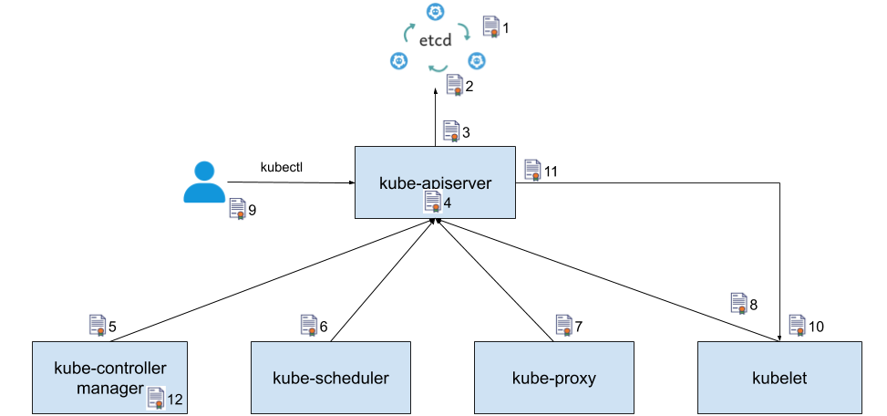
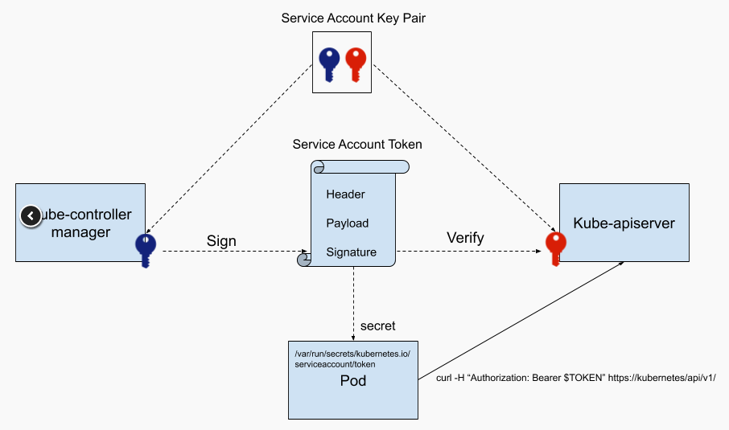

本篇文章主要介绍了k8s中用的证书和组件之间是如何进行认证访问的。
k8s证书介绍
众所周知。Kubernetes 需要 PKI 证书才能进行基于 TLS 的身份验证。如果你是使用kubeadm安装的 Kubernetes， 则会自动生成集群所需的证书。但是如果是通过二进制搭建，所有的证书是需要自己生成的，这里我们说说集群必需的证书。
- 服务器单向认证：只需要服务器端提供证书，客户端通过服务器端证书验证服务的身份，但服务器并不验证客户端的身份。这种情况一般适用于对 Internet 开放的服务，例如搜索引擎网站，任何客户端都可以连接到服务器上进行访问，但客户端需要验证服务器的身份，以避免连接到伪造的恶意服务器。
- 双向 TLS 认证：除了客户端需要验证服务器的证书，服务器也要通过客户端证书验证客户端的身份。这种情况下服务器提供的是敏感信息，只允许特定身份的客户端访问
Kubernetes为了安全性，都是采用双向认证。通常我们在部署k8s时候，kubeadm会自动生成集群所需要的证书，下面我们就这些证书一一给大家进行讲解。
这是我们用kubeadm搭建完一个集群后再/etc/kubernetes目录下所生成的文件
1 | [root etc]# tree kubernetes/ |

下面我们根据这个k8s的组件之间通讯图来一一讲解每个证书的作用。
CA证书
kubeadm安装的集群中我们都是用3套CA证书来管理和签发其他证书，一套CA给ETCD使用，一套是给kubernetes内部组件使用，还有一套是给配置聚合层使用的，当然如果你觉得管理3套CA比较麻烦，您也可以用一套来管理。
etcd证书
1 | ca.crt ca.key healthcheck-client.crt healthcheck-client.key peer.crt peer.key server.crt server.key |
etcd证书位于/etc/kubernetes/pki/etcd目录下，我们根据etcd的yaml配置解释下证书的作用
1 | spec: |
- etcd 对外提供服务的服务器证书及私钥
1
server.crt server.key
- etcd 节点之间相互进行认证的 peer 证书、私钥以及验证 peer 的 CA
1
ca.crt ca.key peer.crt peer.key
- etcd 验证访问其服务的客户端的 CA
1
healthcheck-client.crt healthcheck-client.key
kube-apiserver证书
1 | name: kube-apiserver |
apiserver证书位于/etc/kubernetes/pki，同样我们通过apiserver的yaml文件来一一解释下每个证书的作用。
- 访问etcd的客户端证书及私钥，这个证书是由etcd的CA证书签发，因此也需要在apiserver中配置etcd的CA证书
1
apiserver-etcd-client.key apiserver-etcd-client.crt
- 用来签发k8s中其他证书的CA证书及私钥
1
ca.crt ca.key
- apiServer的对外提供服务的服务端证书及私钥
1
apiserver.crt apiserver.key
- apiserver 访问 kubelet 所需的客户端证书及私钥配置聚合层（apiserver扩展）的CA和客户端证书及私钥
1
apiserver-kubelet-client.crt apiserver-kubelet-client.key
说明：要使聚合层在您的环境中正常工作以支持代理服务器和扩展 apiserver 之间的相互 TLS 身份验证， 需要满足一些设置要求。Kubernetes 和 kube-apiserver 具有多个 CA， 因此请确保代理是由聚合层 CA 签名的，而不是由主 CA 签名的。扩展apiserver为了能够和apiserver通讯，所以需要在apiserver中配置，假如你不需要这个功能可以不配置该证书。sa.pubfront-proxy-client.crt front-proxy-ca.key front-proxy-client.key 1
2```
* 验证 service account token 的公钥spec:1
2
3
4到这里，集群生成的所有证书介绍完了，那么像kube-controller-mananger、kube-scheduler、kube-proxy、kubele这些组件也是需要访问apiserver的，那么他们是怎么通讯的呢？下面我们可以看看这些组件是如何和apiserver进行通讯的。
# kube-controller-mananger
还是和之前一样，我们通过kube-controller-mananger的yaml文件配置来看看是如何访问apiserver。
containers:- command:
- kube-controller-manager
- —allocate-node-cidrs=true
- —authentication-kubeconfig=/etc/kubernetes/controller-manager.conf
- —authorization-kubeconfig=/etc/kubernetes/controller-manager.conf
- —bind-address=127.0.0.1
- —client-ca-file=/etc/kubernetes/pki/ca.crt
- —cluster-cidr=10.244.0.0/16
- —cluster-signing-cert-file=/etc/kubernetes/pki/ca.crt
- —cluster-signing-key-file=/etc/kubernetes/pki/ca.key
- —controllers=*,bootstrapsigner,tokencleaner
- —kubeconfig=/etc/kubernetes/controller-manager.conf
- —leader-elect=true
- —node-cidr-mask-size=24
- —requestheader-client-ca-file=/etc/kubernetes/pki/front-proxy-ca.crt
- —root-ca-file=/etc/kubernetes/pki/ca.crt
- —service-account-private-key-file=/etc/kubernetes/pki/sa.key
- —use-service-account-credentials=true
image: k8s.gcr.io/kube-controller-manager:v1.15.2[root@VM-4-3-centos kubernetes]# cat controller-manager.conf1
2
3
4
5
6
7你会发现在yaml中配置了/etc/kubernetes/controller-manager.conf这个配置文件，而不是配置controller-manager的客户端证书之类的。Kubernetes 这里的设计是这样的，kube-controller-mananger、kube-scheduler、kube-proxy、kubelet等组件，采用一个kubeconfig 文件中配置的信息来访问 kube-apiserver。该文件中包含了 kube-apiserver 的地址，验证 kube-apiserver 服务器证书的 CA 证书，自己的客户端证书和私钥等访问信息，这样组件只需要配置这个kubeconfig就行。
由于创建工作负载的时候，我们有时候会用到service accout，那么这里需要和apiserver认证，所以我们需要在controller-manager
配置上sa私钥，当然需要和apiserver通讯，自然需要配置上kubernates的CA证书
下面我们看看controller-manager.conf这个文件配置的证书和秘钥是什么。
apiVersion: v1
clusters:
- command:
- cluster:
certificate-authority-data: LS0tLS1CRUdJTiBDRVJUSUZJQ0FURS0tLS0tCk1JSUN5RENDQWJDZ0F3SUJBZ0lCQURBTkJna3Foa2lHOXcwQkFRc0ZBREFWTVJNd0VRWURWUVFERXdwcmRXSmwKY201bGRHVnpNQjRYRFRJd01EZ3lNREF5TXpBd05Wb1hEVE13TURneE9EQXlNekF3TlZvd0ZURVRNQkVHQTFVRQpBeE1LYTNWaVpYSnVaWFJsY3pDQ0FTSXdEUVlKS29aSWh2Y05BUUVCQlFBRGdnRVBBRENDQVFvQ2dnRUJBSndoCmw4ZVd5SlBsSWpwajlTN09VSWRSTWVxV0Mwb2crN3hQemJQZDhzS2NTemZqWjdHc0ttUXlvQjhoQnNlaVVDdUwKai9teVl5Tk02MkxIa0ZKbDI3MXNFWVdmOEtiWS81Y210UmFjRnlMOEpyaTNLQi91eHZnZlEvMXhMK2c3UmRBcQpGQllWRzNtaSs1T1orTExyZlVMUU5qemtoTVllaEhDdHNDRmZJMGF5amJpYk1UUGJLT3lobjV3cHVMZzgvOVdlClNTSnI1TmtnK2R0WHJSZ05YelNpc1JMQVF5MmdEczdOaTN0SklaNjRuRGdIakpyS21HR2dqbEljN1RFdGFUdWcKcnltKy92akVZZ2NxTlhHakY2ekJlT1FXNW5NdUh0K1plYXphZ1QyQTNkUDhGY3lEWVZrSFJVd0RESDBZOVZlcwpOUFAyZnhURzVVZlhWOUV0WVJNQ0F3RUFBYU1qTUNFd0RnWURWUjBQQVFIL0JBUURBZ0trTUE4R0ExVWRFd0VCCi93UUZNQU1CQWY4d0RRWUpLb1pJaHZjTkFRRUxCUUFEZ2dFQkFEajZLYXVQR2dvVnlGQmdNUzFZYlVFRXFHQmoKN3IwaG5vclNuOVp4dlUxZkM1UkZ0UEd0OEI0YU40T3RMa1REUno5ZmdFc1ZidFdoMXRXWURIWUF6N2FDYkVZawpMRTArRzZQMkpxR043SHlrd05BZFp1QS96emhOdVFKZnhjZG5qVHlIRWZXZyt5OEd1S2JqSU1QdFJVOU45bFpoCkZTeUxsYjNvektYbURDK2RuSHhHMXhNbnpCM05TQStYeGk3ZDVHakExemUzYXFxZXM2bWVONTNYWnFkeDE2N0gKLzNBNld6NjZ4UE9nOHlsUFNVa3R5bU1HNTFkOTFsdTFiZWJYUExtdmc0K3BBeFdhZGJGZ21MR0Z0UE1URXcrWgpIRHZzK3E2NDBIOWJpeitPV2Rld0hjUXE0TW9oQ1dubDhhVzVJYWVSYW1mWS9zZy8xd1NXMkZteGViQT0KLS0tLS1FTkQgQ0VSVElGSUNBVEUtLS0tLQo=
server: https://10.0.4.3:6443
name: kubernetes
contexts: - context:
cluster: kubernetes
user: system:kube-controller-manager
name: system:kube-controller-manager@kubernetes
current-context: system:kube-controller-manager@kubernetes
kind: Config
preferences: {}
users: - name: system:kube-controller-manager
user:
client-certificate-data: LS0tLS1CRUdJTiBDRVJUSUZJQ0FURS0tLS0tCk1JSUM1ekNDQWMrZ0F3SUJBZ0lJSWN4Ynk4VWEvV1F3RFFZSktvWklodmNOQVFFTEJRQXdGVEVUTUJFR0ExVUUKQXhNS2EzVmlaWEp1WlhSbGN6QWVGdzB5TURBNE1qQXdNak13TURWYUZ3MHlNVEE0TWpBd01qTXdNRGRhTUNreApKekFsQmdOVkJBTVRIbk41YzNSbGJUcHJkV0psTFdOdmJuUnliMnhzWlhJdGJXRnVZV2RsY2pDQ0FTSXdEUVlKCktvWklodmNOQVFFQkJRQURnZ0VQQURDQ0FRb0NnZ0VCQU5YK0Vqa3c0NDNTNzh5d05LL0dIQTV2eFZCS0Rhbi8KZ21yaUlFTW1hYWhlbDllREJXR0s0dVVtY1VXMXU1TCszeUR0amJlKy83MHZ2M3hvSWY1VkNZQXZqYUorN2twUQpyYW5RUE93cFJnbUlqNTEzV1FsZzMxWDlqREpuNlAybVpYTmZ6YWVOalBwOXdrZGkzZGVqSUZaSm1zYjQ0R3VwCkNrdlpodE5iYUlrVVU1U3dCT3h1dE92Um1uemdHQ3BQa0c4ME9pNWdYcDVzTHJ2dmVYSWxpem5wbHNsa3pxbjQKdWNJMHZMekhQY0JsSWhncEVJOXdCVTFOK3VWLzIxTmRaT3p1UlpFVFRMQ0xmNjhVR0FlM0ZCVXJHblJCUTJJZgpKLzhpNnJVQ2l1T25PQWUvOFNLbzlVM0ExOHN3RDJYandTZVo1NzRRclRGdkFjUjBYQ1BibW4wQ0F3RUFBYU1uCk1DVXdEZ1lEVlIwUEFRSC9CQVFEQWdXZ01CTUdBMVVkSlFRTU1Bb0dDQ3NHQVFVRkJ3TUNNQTBHQ1NxR1NJYjMKRFFFQkN3VUFBNElCQVFBcTY0cVBnVllzRzFGb05QQTRTNlJ0bGwrbUdTVUE2QlVNakQrWkt0eVM1NExCVFZnWQp5K1IrL0Zpd3o2RW1xWUpnZ0EyNWZGdkszSWlGNCt5d3JxeDZETlVZa3BBQkZFWXQ5VjU4a2gxV0pha3BvMEZQCnRZRkFaNmlEMlg4UlBZeUUwSXBMYlFqTGRncS9LYTRiSlhZRFhsS3RTV2UwbmJoY2FUWjRpRm5BcldndmpRQ0sKU05kV0tmSUpGNjJiWGE5a1BGc3ROYWVrWjdoQVZEZzhBbEd1c0tlYVFLdFNLZ2dMREFreElRWjlnNTZSVUprYwp6UUhRVHlibmVTcXJEN3cxT0xIR2RpYmZEYXhzMWdtbi9oL20xNk5ib3NMUlgxNkkxK3VKOWV1d29TWlp3Z29zCmpVRExuWVg1Zm1ZcEdhK2ZDbjdiMTJ4Mzg3SFpmbkE4eTFDTQotLS0tLUVORCBDRVJUSUZJQ0FURS0tLS0tCg==
client-key-data: LS0tLS1CRUdJTiBSU0EgUFJJVkFURSBLRVktLS0tLQpNSUlFb3dJQkFBS0NBUUVBMWY0U09URGpqZEx2ekxBMHI4WWNEbS9GVUVvTnFmK0NhdUlnUXlacHFGNlgxNE1GCllZcmk1U1p4UmJXN2t2N2ZJTzJOdDc3L3ZTKy9mR2doL2xVSmdDK05vbjd1U2xDdHFkQTg3Q2xHQ1lpUG5YZFoKQ1dEZlZmMk1NbWZvL2FabGMxL05wNDJNK24zQ1IyTGQxNk1nVmttYXh2amdhNmtLUzltRzAxdG9pUlJUbExBRQo3RzYwNjlHYWZPQVlLaytRYnpRNkxtQmVubXd1dSs5NWNpV0xPZW1XeVdUT3FmaTV3alM4dk1jOXdHVWlHQ2tRCmozQUZUVTM2NVgvYlUxMWs3TzVGa1JOTXNJdC9yeFFZQjdjVUZTc2FkRUZEWWg4bi95THF0UUtLNDZjNEI3L3gKSXFqMVRjRFh5ekFQWmVQQko1bm52aEN0TVc4QnhIUmNJOXVhZlFJREFRQUJBb0lCQURCTHVrTXNGSDlpdHZwRQpYbSs1VDRXMmxocXJ5Kyt0R2ZzVGMrS1QzYzdCSXBYaUhTbkpsYkhQL2txVVhIUXRqNkEzM1A4MlhUT09maklPCnNuVmJMZHkvWHNEbzB0RDA2bXpqOFl2L09LNVlJc21RTVFrYjB1dnVZR0RUOE5LbVpra211eHh3cHZ1MXZFNHUKTXhGQzRMNTR1RFRsNElpTHl5WVpQd09lb3JZazlYVi9LSkN4a2g1RnVmZzBublI5MjNXQ1lDZVNyaUVWRm9LbQovbzBKYmlVNE1MU3FxallRWnljRnFSbGM0Vy9sMVJuMldLbU1KZ29EVUE4eEZiOEtJYjk4bGpOR0F0Z2QyNFQwCmcxS1VnbDRNazlPOTEvUzdrbHc3L3dsaHBkY3g0eFJ2dEtBTWZiM0RBa1V4MmpFZDB2ckZvU3NseHM0NXJOc2QKM296ZDhFRUNnWUVBM1p2OGJZTDE0ZlU3c0ZnVXlXekl4ejA3WlJ5czFzZitESmVXRmNCOEZoa2Jpb3Q1T0dqZwp0RHZmQlcvOXliMmtPM3RRNlJxNkFMOFpKcGE1QjcyOVF2YUJ1bDlpRHladVZndC8xUnY1d290Smo1SGZQS25vCnFVNzh6NVdtQUR2VitmQTVXaW9ad0hBVzQ3RHFLUU5OdzYyNWZaZFV3NTFXblZOWHpBZWR2VkVDZ1lFQTl6TjgKU3JrOXlsUlBaZnQ4emgrK05OZndoOFgzRWlZR2JwUHNpWG4zTitxYnQ4eXJORFhNYXRId1NrS2dxWDdxU0twQQpDc3ZGeXRreDhBc2VMaDZhQzBMbXh1aVVtQW8yMnBBU21veDY3VFo1ditqeXdtNGt3TFFXdjh6R0ptMjhyUlRVClZkejMvZC9pTkJHZDlKaHB0dzY3REUvcENPTm9vVWhOOHFwbVQyMENnWUJSYm9vNWE1QVNzZHgzRmthOUpWNDUKNkVRMUNXNXhsaGZDWk1sZndOVllBVzNmWVJUd0o0bTZjTzJvdjloUUU0R1A0ZVovWWJUTHBXMEdnd2dHMGpBRAp0VFZDV041ZGxzK2dpcVUwbUEwVThiM2NKY3dVTEpNejg3UnVTeDB1cE00aUE2WHZmZHpzbThPdGMwcjRPeUNPCk1QNGlLa09aaGUxWDdsSXF4UG12b1FLQmdFdk45UUp4RmJxeTZmb3JDWlduOUVyK0lSdHhvSmRuSTdmTEV0RUIKbnNiOTRheVdUYlhmL1lTUVJuQnZTQmRSL1FRMWVSZ1didHdLaUo3RXVnZUlpTktGUElHb2x0Q2M2VDlTeVBHdAp2SkI3a1JCQm5oZnpjTC9MT2VLdEorSm02bUhsTGt2NlMrNEZOcmVpNDE0N1VzZTQ4N0VOM0RkR2pUSlFHdDhjClUrMXRBb0dCQU1JVzFrcHhGZ1NOUjJORGczdHlJWGNhVDJiQStPTWZrc25nNVdrQUdqb0xveS9laE5waWtJTHAKbHFVVG5oZENaMHBvV3d2MUkxdkZ5VVRJTTREUHd1WVNicnZQNjV2UkJua1M5RGlldVE5Q0FEbXRkT0h1WWR2VgpzSy90cmQ5RTNTdUNVNWNSdXJqVkFacGJoOVNIQzU3bk9rVTRJY2EzT0EvbGZsSmRvbUl0Ci0tLS0tRU5EIFJTQSBQUklWQVRFIEtFWS0tLS0tCg==[root@VM-4-3-centos kubernetes]# echo “LS0tLS1CRUdJTiBDRVJUSUZJQ0FURS0tLS0tCk1JSUN5RENDQWJDZ0F3SUJBZ0lCQURBTkJna3Foa2lHOXcwQkFRc0ZBREFWTVJNd0VRWURWUVFERXdwcmRXSmwKY201bGRHVnpNQjRYRFRJd01EZ3lNREF5TXpBd05Wb1hEVE13TURneE9EQXlNekF3TlZvd0ZURVRNQkVHQTFVRQpBeE1LYTNWaVpYSnVaWFJsY3pDQ0FTSXdEUVlKS29aSWh2Y05BUUVCQlFBRGdnRVBBRENDQVFvQ2dnRUJBSndoCmw4ZVd5SlBsSWpwajlTN09VSWRSTWVxV0Mwb2crN3hQemJQZDhzS2NTemZqWjdHc0ttUXlvQjhoQnNlaVVDdUwKai9teVl5Tk02MkxIa0ZKbDI3MXNFWVdmOEtiWS81Y210UmFjRnlMOEpyaTNLQi91eHZnZlEvMXhMK2c3UmRBcQpGQllWRzNtaSs1T1orTExyZlVMUU5qemtoTVllaEhDdHNDRmZJMGF5amJpYk1UUGJLT3lobjV3cHVMZzgvOVdlClNTSnI1TmtnK2R0WHJSZ05YelNpc1JMQVF5MmdEczdOaTN0SklaNjRuRGdIakpyS21HR2dqbEljN1RFdGFUdWcKcnltKy92akVZZ2NxTlhHakY2ekJlT1FXNW5NdUh0K1plYXphZ1QyQTNkUDhGY3lEWVZrSFJVd0RESDBZOVZlcwpOUFAyZnhURzVVZlhWOUV0WVJNQ0F3RUFBYU1qTUNFd0RnWURWUjBQQVFIL0JBUURBZ0trTUE4R0ExVWRFd0VCCi93UUZNQU1CQWY4d0RRWUpLb1pJaHZjTkFRRUxCUUFEZ2dFQkFEajZLYXVQR2dvVnlGQmdNUzFZYlVFRXFHQmoKN3IwaG5vclNuOVp4dlUxZkM1UkZ0UEd0OEI0YU40T3RMa1REUno5ZmdFc1ZidFdoMXRXWURIWUF6N2FDYkVZawpMRTArRzZQMkpxR043SHlrd05BZFp1QS96emhOdVFKZnhjZG5qVHlIRWZXZyt5OEd1S2JqSU1QdFJVOU45bFpoCkZTeUxsYjNvektYbURDK2RuSHhHMXhNbnpCM05TQStYeGk3ZDVHakExemUzYXFxZXM2bWVONTNYWnFkeDE2N0gKLzNBNld6NjZ4UE9nOHlsUFNVa3R5bU1HNTFkOTFsdTFiZWJYUExtdmc0K3BBeFdhZGJGZ21MR0Z0UE1URXcrWgpIRHZzK3E2NDBIOWJpeitPV2Rld0hjUXE0TW9oQ1dubDhhVzVJYWVSYW1mWS9zZy8xd1NXMkZteGViQT0KLS0tLS1FTkQgQ0VSVElGSUNBVEUtLS0tLQo=”|base64 -d1
我们解析下certificate-authority-data这个内容看看是不是CA的证书
——-BEGIN CERTIFICATE——-
MIICyDCCAbCgAwIBAgIBADANBgkqhkiG9w0BAQsFADAVMRMwEQYDVQQDEwprdWJl
cm5ldGVzMB4XDTIwMDgyMDAyMzAwNVoXDTMwMDgxODAyMzAwNVowFTETMBEGA1UE
AxMKa3ViZXJuZXRlczCCASIwDQYJKoZIhvcNAQEBBQADggEPADCCAQoCggEBAJwh
l8eWyJPlIjpj9S7OUIdRMeqWC0og+7xPzbPd8sKcSzfjZ7GsKmQyoB8hBseiUCuL
j/myYyNM62LHkFJl271sEYWf8KbY/5cmtRacFyL8Jri3KB/uxvgfQ/1xL+g7RdAq
FBYVG3mi+5OZ+LLrfULQNjzkhMYehHCtsCFfI0ayjbibMTPbKOyhn5wpuLg8/9We
SSJr5Nkg+dtXrRgNXzSisRLAQy2gDs7Ni3tJIZ64nDgHjJrKmGGgjlIc7TEtaTug
rym+/vjEYgcqNXGjF6zBeOQW5nMuHt+ZeazagT2A3dP8FcyDYVkHRUwDDH0Y9Ves
NPP2fxTG5UfXV9EtYRMCAwEAAaMjMCEwDgYDVR0PAQH/BAQDAgKkMA8GA1UdEwEB
/wQFMAMBAf8wDQYJKoZIhvcNAQELBQADggEBADj6KauPGgoVyFBgMS1YbUEEqGBj
7r0hnorSn9ZxvU1fC5RFtPGt8B4aN4OtLkTDRz9fgEsVbtWh1tWYDHYAz7aCbEYk
LE0+G6P2JqGN7HykwNAdZuA/zzhNuQJfxcdnjTyHEfWg+y8GuKbjIMPtRU9N9lZh
FSyLlb3ozKXmDC+dnHxG1xMnzB3NSA+Xxi7d5GjA1ze3aqqes6meN53XZqdx167H
/3A6Wz66xPOg8ylPSUktymMG51d91lu1bebXPLmvg4+pAxWadbFgmLGFtPMTEw+Z
HDvs+q640H9biz+OWdewHcQq4MohCWnl8aW5IaeRamfY/sg/1wSW2FmxebA=
——-END CERTIFICATE——-
[root@VM-4-3-centos kubernetes]# cat pki/ca.crt
——-BEGIN CERTIFICATE——-
MIICyDCCAbCgAwIBAgIBADANBgkqhkiG9w0BAQsFADAVMRMwEQYDVQQDEwprdWJl
cm5ldGVzMB4XDTIwMDgyMDAyMzAwNVoXDTMwMDgxODAyMzAwNVowFTETMBEGA1UE
AxMKa3ViZXJuZXRlczCCASIwDQYJKoZIhvcNAQEBBQADggEPADCCAQoCggEBAJwh
l8eWyJPlIjpj9S7OUIdRMeqWC0og+7xPzbPd8sKcSzfjZ7GsKmQyoB8hBseiUCuL
j/myYyNM62LHkFJl271sEYWf8KbY/5cmtRacFyL8Jri3KB/uxvgfQ/1xL+g7RdAq
FBYVG3mi+5OZ+LLrfULQNjzkhMYehHCtsCFfI0ayjbibMTPbKOyhn5wpuLg8/9We
SSJr5Nkg+dtXrRgNXzSisRLAQy2gDs7Ni3tJIZ64nDgHjJrKmGGgjlIc7TEtaTug
rym+/vjEYgcqNXGjF6zBeOQW5nMuHt+ZeazagT2A3dP8FcyDYVkHRUwDDH0Y9Ves
NPP2fxTG5UfXV9EtYRMCAwEAAaMjMCEwDgYDVR0PAQH/BAQDAgKkMA8GA1UdEwEB
/wQFMAMBAf8wDQYJKoZIhvcNAQELBQADggEBADj6KauPGgoVyFBgMS1YbUEEqGBj
7r0hnorSn9ZxvU1fC5RFtPGt8B4aN4OtLkTDRz9fgEsVbtWh1tWYDHYAz7aCbEYk
LE0+G6P2JqGN7HykwNAdZuA/zzhNuQJfxcdnjTyHEfWg+y8GuKbjIMPtRU9N9lZh
FSyLlb3ozKXmDC+dnHxG1xMnzB3NSA+Xxi7d5GjA1ze3aqqes6meN53XZqdx167H
/3A6Wz66xPOg8ylPSUktymMG51d91lu1bebXPLmvg4+pAxWadbFgmLGFtPMTEw+Z
HDvs+q640H9biz+OWdewHcQq4MohCWnl8aW5IaeRamfY/sg/1wSW2FmxebA=
——-END CERTIFICATE——-[root@VM-4-3-centos kubernetes]# cat scheduler.conf1
2
3
4
5
从解码可以发现，kubeconfig配置的就是kubernates的CA证书，client-certificate-data和client-key-data就是controller-manager用来访问apiserver的客户端证书和秘钥，只不过kubeconfig对内容进行了base64编码。这个就是整个controller-manager和apiserver证书认证的方式。
kube-scheduler也是同样的原理，也是在yaml中配置一个kubeconfig来进行访问apiserver
apiVersion: v1
clusters: - cluster:
certificate-authority-data: LS0tLS1CRUdJTiBDRVJUSUZJQ0FURS0tLS0tCk1JSUN5RENDQWJDZ0F3SUJBZ0lCQURBTkJna3Foa2lHOXcwQkFRc0ZBREFWTVJNd0VRWURWUVFERXdwcmRXSmwKY201bGRHVnpNQjRYRFRJd01EZ3lNREF5TXpBd05Wb1hEVE13TURneE9EQXlNekF3TlZvd0ZURVRNQkVHQTFVRQpBeE1LYTNWaVpYSnVaWFJsY3pDQ0FTSXdEUVlKS29aSWh2Y05BUUVCQlFBRGdnRVBBRENDQVFvQ2dnRUJBSndoCmw4ZVd5SlBsSWpwajlTN09VSWRSTWVxV0Mwb2crN3hQemJQZDhzS2NTemZqWjdHc0ttUXlvQjhoQnNlaVVDdUwKai9teVl5Tk02MkxIa0ZKbDI3MXNFWVdmOEtiWS81Y210UmFjRnlMOEpyaTNLQi91eHZnZlEvMXhMK2c3UmRBcQpGQllWRzNtaSs1T1orTExyZlVMUU5qemtoTVllaEhDdHNDRmZJMGF5amJpYk1UUGJLT3lobjV3cHVMZzgvOVdlClNTSnI1TmtnK2R0WHJSZ05YelNpc1JMQVF5MmdEczdOaTN0SklaNjRuRGdIakpyS21HR2dqbEljN1RFdGFUdWcKcnltKy92akVZZ2NxTlhHakY2ekJlT1FXNW5NdUh0K1plYXphZ1QyQTNkUDhGY3lEWVZrSFJVd0RESDBZOVZlcwpOUFAyZnhURzVVZlhWOUV0WVJNQ0F3RUFBYU1qTUNFd0RnWURWUjBQQVFIL0JBUURBZ0trTUE4R0ExVWRFd0VCCi93UUZNQU1CQWY4d0RRWUpLb1pJaHZjTkFRRUxCUUFEZ2dFQkFEajZLYXVQR2dvVnlGQmdNUzFZYlVFRXFHQmoKN3IwaG5vclNuOVp4dlUxZkM1UkZ0UEd0OEI0YU40T3RMa1REUno5ZmdFc1ZidFdoMXRXWURIWUF6N2FDYkVZawpMRTArRzZQMkpxR043SHlrd05BZFp1QS96emhOdVFKZnhjZG5qVHlIRWZXZyt5OEd1S2JqSU1QdFJVOU45bFpoCkZTeUxsYjNvektYbURDK2RuSHhHMXhNbnpCM05TQStYeGk3ZDVHakExemUzYXFxZXM2bWVONTNYWnFkeDE2N0gKLzNBNld6NjZ4UE9nOHlsUFNVa3R5bU1HNTFkOTFsdTFiZWJYUExtdmc0K3BBeFdhZGJGZ21MR0Z0UE1URXcrWgpIRHZzK3E2NDBIOWJpeitPV2Rld0hjUXE0TW9oQ1dubDhhVzVJYWVSYW1mWS9zZy8xd1NXMkZteGViQT0KLS0tLS1FTkQgQ0VSVElGSUNBVEUtLS0tLQo=
server: https://10.0.4.3:6443
name: kubernetes
contexts: - context:
cluster: kubernetes
user: system:kube-scheduler
name: system:kube-scheduler@kubernetes
current-context: system:kube-scheduler@kubernetes
kind: Config
preferences: {}
users: - name: system:kube-scheduler
user:
client-certificate-data: LS0tLS1CRUdJTiBDRVJUSUZJQ0FURS0tLS0tCk1JSUMzakNDQWNhZ0F3SUJBZ0lJVlUybER1V2Y1OHd3RFFZSktvWklodmNOQVFFTEJRQXdGVEVUTUJFR0ExVUUKQXhNS2EzVmlaWEp1WlhSbGN6QWVGdzB5TURBNE1qQXdNak13TURWYUZ3MHlNVEE0TWpBd01qTXdNRGhhTUNBeApIakFjQmdOVkJBTVRGWE41YzNSbGJUcHJkV0psTFhOamFHVmtkV3hsY2pDQ0FTSXdEUVlKS29aSWh2Y05BUUVCCkJRQURnZ0VQQURDQ0FRb0NnZ0VCQU14SzJrNmZnWG50cHVNM2JPZ2ZUS0V4aVhsdzdMQVc2VHpUK2thcndVS2UKK2hKSExWSjF4OUphazlDajZ2VWRZdEdkRzMyd0V1R0VFa3ltN0dFZXlyeHJneGRsU3NyVmRqQkFTYnhwNndpZApvZ3dmL2xVa2kza2FPVUozVXd6bmFnWCt6ZUh1d2hVN0R3NkNuaUpkMy9SZW9hU0FjZitvbDl0TTRiazRldVRrCnRXaUE5SDk0VnlQam42SUpkUDdNb1h4TWpZN1c1UysxNy9aczBwbXJabHhuWFdqZjZESXdyNnplbStSNlF1YnAKeE5adEk1WWdsNDk2a09BaTZMVW5xemhCNHIzaDdDOUd0SjFnVDk1YmxiQ0VZNzRtNmVLREZpNXFwZ3JRZnA0YwoxMlhRYzNtcGQzY2IrZXlGUFNsYUVDUmRwS1BKazRpZXgxNnN4TmwzRmk4Q0F3RUFBYU1uTUNVd0RnWURWUjBQCkFRSC9CQVFEQWdXZ01CTUdBMVVkSlFRTU1Bb0dDQ3NHQVFVRkJ3TUNNQTBHQ1NxR1NJYjNEUUVCQ3dVQUE0SUIKQVFBWFovVTcxSnRqQXQ3MjJLeVl6Q1RDZlF1bHdMM2EySGN6NGw5NXVaMFNWVG5ncTNhWUJxeVdwQ2puM3VNaApTaGN5OUZ4ZC92am52YXVTWUdXY05abm84dEVNUFhTaitNNzI5bW1vTUNUa0xCUGJSVGZwRGt3aDNnRS9IRWtuCnN0emRoZTZ3dWp4OWduMXl5WTJSOTFTZ3U3cjdwZjlLM1hOeFh2SFo3Z0tDQnJIVisyMVlQTkNCaC8rYlVuZkcKY2pvNlNNZHphT0Y5SlJod2pUS0l5VTlkeXJkbFBLUlR0Q3NGVEttdy9HM1d4Z1gvbGRCZnNsZmNaVXR4TlpsYQpablBVNlYvK3gwelBTVG56RzRmYTQ3UkhlZmc3YzczQkZjL0ZiYW9obmhrZHNPMVBNWGdhSjQ1bGo1NVNPL1phCmlIbUphZUF3bnh5d0hMazFtclE1b0ttVAotLS0tLUVORCBDRVJUSUZJQ0FURS0tLS0tCg==
client-key-data: LS0tLS1CRUdJTiBSU0EgUFJJVkFURSBLRVktLS0tLQpNSUlFcEFJQkFBS0NBUUVBekVyYVRwK0JlZTJtNHpkczZCOU1vVEdKZVhEc3NCYnBQTlA2UnF2QlFwNzZFa2N0ClVuWEgwbHFUMEtQcTlSMWkwWjBiZmJBUzRZUVNUS2JzWVI3S3ZHdURGMlZLeXRWMk1FQkp2R25yQ0oyaURCLysKVlNTTGVSbzVRbmRURE9kcUJmN040ZTdDRlRzUERvS2VJbDNmOUY2aHBJQngvNmlYMjB6aHVUaDY1T1MxYUlEMApmM2hYSStPZm9nbDAvc3loZkV5Tmp0YmxMN1h2OW16U21hdG1YR2RkYU4vb01qQ3ZyTjZiNUhwQzV1bkUxbTBqCmxpQ1hqM3FRNENMb3RTZXJPRUhpdmVIc0wwYTBuV0JQM2x1VnNJUmp2aWJwNG9NV0xtcW1DdEIrbmh6WFpkQnoKZWFsM2R4djU3SVU5S1ZvUUpGMmtvOG1UaUo3SFhxekUyWGNXTHdJREFRQUJBb0lCQVFDbmJhVlRFSGlkdy82bApjMVJIUFBlaG1DYXlKN0ZqYzdOOWpjRXRVREJZZUZBODBLYTlVUmdPTnZ1ejM5TjlSYk1xVlpjbFFEdUpKYU9WCnZLdzN3SE9wVG5lbW9mWlZHL0w4QW9RcjdhYVpiZzlUM3BpamtRclptbnRaRk5BMDRDZk5lQkdsMi9hbVRidSsKU2FCdVMvOXltR2ZqbVAxVTZRaGp5N09uQ0RuNEFsMmw1SXJpUCtlSTgxS3ZjVjRWUWNhcmtQL0F5SityQm56SgpSZjNRSFBRL2pFaUVRMm9kKzQ4N1FzSWNZVlcwZ0FmQ3pKN05NMUJMeTE0Yy8zUFJRS3JLZTdXT3AwM2Z3QmkxCk5TRlc1dmxSUkpnTDduSHQ4TkdsSUhHRE5VT29KR0UvVnppekJUVFpQRS9nOEkxZ1FLYko5b3ZSdXJQa0J6VGsKRHNGQ281bEJBb0dCQU5qalNTVXIybFo0Z1B6MEZ6bnBMTEFBaVhBSDkwZFlBb1BQSUhoWDR2WmtRUjE4Ykx2NgoraXVSR2dMTkQyckV4dHk3dE1tcTQrZkt2S1VXRWorOVR0KzNqWTVmTFdCeWhNTk1uaXN2eDFsdkxlZnFybkRvCnlkODdPb0p3TnZZdit2YitQR3NGaU51SHdXUTR4Wit3WTFaYitCUnB5UVJNUEs1TnVEbDRFMXZQQW9HQkFQRWkKRitwS1VJSmE0NGZuWDk3L1lHalh6Z1lWTEQ4RkRRMTh4dmY3TG43UEhUNzJoK1VCaXJFV29uK2RmcDFBZS95UwpTMER6Q2ZLUDdiM0R3YkxPbmRKcHdLWnUrUjdBaEs5RGFlVEJ3Y2FkRDFpTzNoME5RSVFoVFJPaVJRclN4RWpmCllXVnRmUXFuSUJhS3pMSnRCakVtakRDcXJ2QjJ3QTRza1Z5d09WZWhBb0dBTWZWb3k5OG1FL1QrQVVaWWMwWjYKdksvaStLTmRHbG56ZWxranFaVFUrdHh0QTFXOTFpOGhvUmR6WG1ITncxSkFYR2dBWk5Pd1c1d2ZpQWRsZkxrbQppZkhGOFoySzNrU0N3Rm5OdFRUMFBtMlZyVzRwY0dpdTEzVFZMV2Fid21tYTdYbnlnTlJ0aWVQamNDcURteDBPClJMNDZqcmt2VElZakZDTmk1Qm44bTVFQ2dZQmNHdUs1cW1Nd041bGJpd1J5d0dkS0JNeDhSRkFmVGtXYkZrTkYKNjVycDh5Qy9zUmxkWHdaaitEcGZ0bi9yZnZzZEVhQlBFY2FGOFhZbEd3WDh6N0UyOHhBVVFxVkRtdFBUd2xOTApmcnNPcTJWMk5UUWdNclNuQTdWV1A1QlJ2d29jcjc2YktJUXZzb0N1TzV4T3R4ZzdZL2IraStQQWxBdHVIcFh6CnFwaHNvUUtCZ1FERkxITzFwTTNPNlRWN3cybThKWVI0WGxBUWtLZkRPMlFGaDB0bGM1bk1rZUdZbHZFUUlZdVMKS2liV3NJNHVwMHFRcFZjdHF2VU9wc2V1Rk5ZdGVRQzF6YncxNWp4a0xEMm9Gb2c1Yk9WRXk3ekZERU1kVmdpRwpEbjhkbHN3SWp0bUF1SDFGOWdBbGR1V1M0cXkyV0I0SlRPZjBlTDVOM1dTWkRzcm91anA5NlE9PQotLS0tLUVORCBSU0EgUFJJVkFURSBLRVktLS0tLQo=[root@VM-4-3-centos run]# kubectl get pod kube-proxy-6bf2t -n kube-system -o yaml1
2
3
4
5
同理，解析certificate-authority-data也是kubernates的CA证书，client-certificate-data和client-key-data就是kube-scheduler用来访问apiserver的客户端证书和秘钥
在这里我们并未发现kube-proxy的kubeconfig，kube-proxy也是需要访问apiserver的，那么是如何进行认证的。还是从yaml文件进行分析一下，如果需要认证，肯定会在yaml中配置对应的证书或者包含证书的文件或token
…..
containers:- command:
- /usr/local/bin/kube-proxy
- —config=/var/lib/kube-proxy/config.conf
- —hostname-override=$(NODE_NAME)
env: - name: NODE_NAME
valueFrom:
fieldRef:
image: k8s.gcr.io/kube-proxy:v1.15.2apiVersion: v1 fieldPath: spec.nodeName
imagePullPolicy: IfNotPresent
name: kube-proxy
resources: {}
securityContext:
privileged: true
terminationMessagePath: /dev/termination-log
terminationMessagePolicy: File
volumeMounts: - mountPath: /var/lib/kube-proxy
name: kube-proxy - mountPath: /run/xtables.lock
name: xtables-lock - mountPath: /lib/modules
name: lib-modules
readOnly: true - mountPath: /var/run/secrets/kubernetes.io/serviceaccount
name: kube-proxy-token-rd92l
readOnly: true
dnsPolicy: ClusterFirst
…..
volumes:
- configMap:
defaultMode: 420
name: kube-proxy
name: kube-proxy - hostPath:
path: /run/xtables.lock
type: FileOrCreate
name: xtables-lock - hostPath:
path: /lib/modules
type: “”
name: lib-modules - name: kube-proxy-token-rd92l
secret:
defaultMode: 420
secretName: kube-proxy-token-rd92l
kube-proxy挂载一个secret，这边猜测这个就是用来进行认证的。我们查看下这个token
[root@VM-4-3-centos run]# kubectl get secret -n kube-system kube-proxy-token-rd92l -o yaml
apiVersion: v1
data:
ca.crt: LS0tLS1CRUdJTiBDRVJUSUZJQ0FURS0tLS0tCk1JSUN5RENDQWJDZ0F3SUJBZ0lCQURBTkJna3Foa2lHOXcwQkFRc0ZBREFWTVJNd0VRWURWUVFERXdwcmRXSmwKY201bGRHVnpNQjRYRFRJd01EZ3lNREF5TXpBd05Wb1hEVE13TURneE9EQXlNekF3TlZvd0ZURVRNQkVHQTFVRQpBeE1LYTNWaVpYSnVaWFJsY3pDQ0FTSXdEUVlKS29aSWh2Y05BUUVCQlFBRGdnRVBBRENDQVFvQ2dnRUJBSndoCmw4ZVd5SlBsSWpwajlTN09VSWRSTWVxV0Mwb2crN3hQemJQZDhzS2NTemZqWjdHc0ttUXlvQjhoQnNlaVVDdUwKai9teVl5Tk02MkxIa0ZKbDI3MXNFWVdmOEtiWS81Y210UmFjRnlMOEpyaTNLQi91eHZnZlEvMXhMK2c3UmRBcQpGQllWRzNtaSs1T1orTExyZlVMUU5qemtoTVllaEhDdHNDRmZJMGF5amJpYk1UUGJLT3lobjV3cHVMZzgvOVdlClNTSnI1TmtnK2R0WHJSZ05YelNpc1JMQVF5MmdEczdOaTN0SklaNjRuRGdIakpyS21HR2dqbEljN1RFdGFUdWcKcnltKy92akVZZ2NxTlhHakY2ekJlT1FXNW5NdUh0K1plYXphZ1QyQTNkUDhGY3lEWVZrSFJVd0RESDBZOVZlcwpOUFAyZnhURzVVZlhWOUV0WVJNQ0F3RUFBYU1qTUNFd0RnWURWUjBQQVFIL0JBUURBZ0trTUE4R0ExVWRFd0VCCi93UUZNQU1CQWY4d0RRWUpLb1pJaHZjTkFRRUxCUUFEZ2dFQkFEajZLYXVQR2dvVnlGQmdNUzFZYlVFRXFHQmoKN3IwaG5vclNuOVp4dlUxZkM1UkZ0UEd0OEI0YU40T3RMa1REUno5ZmdFc1ZidFdoMXRXWURIWUF6N2FDYkVZawpMRTArRzZQMkpxR043SHlrd05BZFp1QS96emhOdVFKZnhjZG5qVHlIRWZXZyt5OEd1S2JqSU1QdFJVOU45bFpoCkZTeUxsYjNvektYbURDK2RuSHhHMXhNbnpCM05TQStYeGk3ZDVHakExemUzYXFxZXM2bWVONTNYWnFkeDE2N0gKLzNBNld6NjZ4UE9nOHlsUFNVa3R5bU1HNTFkOTFsdTFiZWJYUExtdmc0K3BBeFdhZGJGZ21MR0Z0UE1URXcrWgpIRHZzK3E2NDBIOWJpeitPV2Rld0hjUXE0TW9oQ1dubDhhVzVJYWVSYW1mWS9zZy8xd1NXMkZteGViQT0KLS0tLS1FTkQgQ0VSVElGSUNBVEUtLS0tLQo=
namespace: a3ViZS1zeXN0ZW0=
token: ZXlKaGJHY2lPaUpTVXpJMU5pSXNJbXRwWkNJNklpSjkuZXlKcGMzTWlPaUpyZFdKbGNtNWxkR1Z6TDNObGNuWnBZMlZoWTJOdmRXNTBJaXdpYTNWaVpYSnVaWFJsY3k1cGJ5OXpaWEoyYVdObFlXTmpiM1Z1ZEM5dVlXMWxjM0JoWTJVaU9pSnJkV0psTFhONWMzUmxiU0lzSW10MVltVnlibVYwWlhNdWFXOHZjMlZ5ZG1salpXRmpZMjkxYm5RdmMyVmpjbVYwTG01aGJXVWlPaUpyZFdKbExYQnliM2g1TFhSdmEyVnVMWEprT1RKc0lpd2lhM1ZpWlhKdVpYUmxjeTVwYnk5elpYSjJhV05sWVdOamIzVnVkQzl6WlhKMmFXTmxMV0ZqWTI5MWJuUXVibUZ0WlNJNkltdDFZbVV0Y0hKdmVIa2lMQ0pyZFdKbGNtNWxkR1Z6TG1sdkwzTmxjblpwWTJWaFkyTnZkVzUwTDNObGNuWnBZMlV0WVdOamIzVnVkQzUxYVdRaU9pSmhOemRrTjJKaE1TMW1Zek5pTFRRM1lUTXRZV00wWkMweVpXRmtPVEV6WkRVd09ESWlMQ0p6ZFdJaU9pSnplWE4wWlcwNmMyVnlkbWxqWldGalkyOTFiblE2YTNWaVpTMXplWE4wWlcwNmEzVmlaUzF3Y205NGVTSjkuSTRuR0UxOVhJakFPU0lKcWZyb3A2azhHcXBickxBeVFzQ3NoeFhxMEc3RklTZmJudS1TTW9xV1pHUjU0S2hwREdlaGd6WkQwMGVGZG14bEM1ZzBIc2ZzZE40V0tmVFI1ZjY1b3kzTnVvWUxxcUIzUzgySUxLelJHREVBNHpwWmFXeG1lRmtzdU1mdl9UWDRjSGdtYUI3V0ZQZzJ5RWtxV0VPa3kwT0hOWnIxNmd4Mzl3S1owWDRhQ29FOVd0cGlZU1BKYU5SdmtVbENfNTlPZHJTYnBCYnlkd2JOaWVaRjdhcWRBbFdWQ3JXQkRfWmlCaHNnZklVYUpEcVg5TWtRbUpjVS1Yb2pzWUpXNFpNejZ3OEZFTHY4THpCazRLTUc5V185aG5Jc3FfVlFUM2xDek5iSHlNSktWeXZ1VlVrblo5X3AwaTJGQlpDeGVVdlpVazdrd01R
kind: Secret
metadata:
annotations:
kubernetes.io/service-account.name: kube-proxy
kubernetes.io/service-account.uid: a77d7ba1-fc3b-47a3-ac4d-2ead913d5082
creationTimestamp: “2020-08-20T02:30:48Z”
name: kube-proxy-token-rd92l
namespace: kube-system
resourceVersion: “196”
selfLink: /api/v1/namespaces/kube-system/secrets/kube-proxy-token-rd92l
uid: c9ff07a0-4176-4053-a93c-11c7d0aff285
type: kubernetes.io/service-account-token[root@VM-4-3-centos kubernetes]# cat kubelet.conf1
2
3
4从上面token的内容，这个里面包含一个CA证书是kubernates查到ca证书，token就是用来和apiserver通讯的客户端证书和秘钥
# kubelet
kubelet和其他组件类似，用的kubeconfig来进行认证的，都是用kubernates的CA生成。
apiVersion: v1
clusters:
- command:
- cluster:
certificate-authority-data: LS0tLS1CRUdJTiBDRVJUSUZJQ0FURS0tLS0tCk1JSUN5RENDQWJDZ0F3SUJBZ0lCQURBTkJna3Foa2lHOXcwQkFRc0ZBREFWTVJNd0VRWURWUVFERXdwcmRXSmwKY201bGRHVnpNQjRYRFRJd01EZ3lNREF5TXpBd05Wb1hEVE13TURneE9EQXlNekF3TlZvd0ZURVRNQkVHQTFVRQpBeE1LYTNWaVpYSnVaWFJsY3pDQ0FTSXdEUVlKS29aSWh2Y05BUUVCQlFBRGdnRVBBRENDQVFvQ2dnRUJBSndoCmw4ZVd5SlBsSWpwajlTN09VSWRSTWVxV0Mwb2crN3hQemJQZDhzS2NTemZqWjdHc0ttUXlvQjhoQnNlaVVDdUwKai9teVl5Tk02MkxIa0ZKbDI3MXNFWVdmOEtiWS81Y210UmFjRnlMOEpyaTNLQi91eHZnZlEvMXhMK2c3UmRBcQpGQllWRzNtaSs1T1orTExyZlVMUU5qemtoTVllaEhDdHNDRmZJMGF5amJpYk1UUGJLT3lobjV3cHVMZzgvOVdlClNTSnI1TmtnK2R0WHJSZ05YelNpc1JMQVF5MmdEczdOaTN0SklaNjRuRGdIakpyS21HR2dqbEljN1RFdGFUdWcKcnltKy92akVZZ2NxTlhHakY2ekJlT1FXNW5NdUh0K1plYXphZ1QyQTNkUDhGY3lEWVZrSFJVd0RESDBZOVZlcwpOUFAyZnhURzVVZlhWOUV0WVJNQ0F3RUFBYU1qTUNFd0RnWURWUjBQQVFIL0JBUURBZ0trTUE4R0ExVWRFd0VCCi93UUZNQU1CQWY4d0RRWUpLb1pJaHZjTkFRRUxCUUFEZ2dFQkFEajZLYXVQR2dvVnlGQmdNUzFZYlVFRXFHQmoKN3IwaG5vclNuOVp4dlUxZkM1UkZ0UEd0OEI0YU40T3RMa1REUno5ZmdFc1ZidFdoMXRXWURIWUF6N2FDYkVZawpMRTArRzZQMkpxR043SHlrd05BZFp1QS96emhOdVFKZnhjZG5qVHlIRWZXZyt5OEd1S2JqSU1QdFJVOU45bFpoCkZTeUxsYjNvektYbURDK2RuSHhHMXhNbnpCM05TQStYeGk3ZDVHakExemUzYXFxZXM2bWVONTNYWnFkeDE2N0gKLzNBNld6NjZ4UE9nOHlsUFNVa3R5bU1HNTFkOTFsdTFiZWJYUExtdmc0K3BBeFdhZGJGZ21MR0Z0UE1URXcrWgpIRHZzK3E2NDBIOWJpeitPV2Rld0hjUXE0TW9oQ1dubDhhVzVJYWVSYW1mWS9zZy8xd1NXMkZteGViQT0KLS0tLS1FTkQgQ0VSVElGSUNBVEUtLS0tLQo=
server: https://10.0.4.3:6443
name: kubernetes
contexts: - context:
cluster: kubernetes
user: system:node:vm-4-3-centos
name: system:node:vm-4-3-centos@kubernetes
current-context: system:node:vm-4-3-centos@kubernetes
kind: Config
preferences: {}
users: - name: system:node:vm-4-3-centos
user:
client-certificate-data: LS0tLS1CRUdJTiBDRVJUSUZJQ0FURS0tLS0tCk1JSUMrVENDQWVHZ0F3SUJBZ0lJUW92eFg0d2RyTmd3RFFZSktvWklodmNOQVFFTEJRQXdGVEVUTUJFR0ExVUUKQXhNS2EzVmlaWEp1WlhSbGN6QWVGdzB5TURBNE1qQXdNak13TURWYUZ3MHlNVEE0TWpBd01qTXdNRGRhTURzeApGVEFUQmdOVkJBb1RESE41YzNSbGJUcHViMlJsY3pFaU1DQUdBMVVFQXhNWmMzbHpkR1Z0T201dlpHVTZkbTB0Ck5DMHpMV05sYm5SdmN6Q0NBU0l3RFFZSktvWklodmNOQVFFQkJRQURnZ0VQQURDQ0FRb0NnZ0VCQU1scld4Y3kKOEhyT0FPeXNGcjJxUXhOdGZ4QllBMWJYZ1BkRy95eW9rWjVLdm1nc0NjbGh2MWkyaWF2bzF6T1d4QkNZSHlJZQpyK0hSdDQ5TFFzcjZIU2k3QlZveEtuWm8rekpjSFBIVHk0VUtESVYrOUxUU29INDA3akhXeGFOWXc0RWw2QVB0Ck92UzcvcXVBb3BBOFNPVVU2YTdWcFc2OHRvNVJtRGNwcGVMZnlmL3dXdXRpZFZ0dTRmTE5RK3gwRnBGRWZXMisKY3ZHNWd2ZlZnaldaUnhzbXoyWlFESEo0NStSWldmVnF6bHdjYVlkMytROTFiK1BmUHhlVU81bmdRMGtpbTVTbAp6K1c4Q1p6Q01UOUF6QVU2USt1L1oyKzlsaU9xbzdxWnEySHZMMms5R05GNjVHcVVnWWpDT3hVRFpoanZ5RkxQCjNvdHR0ZTJQeHZkMXJRa0NBd0VBQWFNbk1DVXdEZ1lEVlIwUEFRSC9CQVFEQWdXZ01CTUdBMVVkSlFRTU1Bb0cKQ0NzR0FRVUZCd01DTUEwR0NTcUdTSWIzRFFFQkN3VUFBNElCQVFBcHpFNkxJU25jZFE1di9yZ2ZJbHRQV2l3Lwp4WjFQdHk2WWZTYmw2UXlNY2g1Qk1RNDhyL3o1ZXV5V21kVXhVUmFHaUlldUVaODAxQ2xteitoRjQ2RFRyZGlaCmZmTUNLcXE5Z3lKbkRBT1VYMkpkY3RZb2IvNWp0T0t0ejVYYmRrMzI5ZG01cUVEQ1gzRm44M3NWcWJPZnRXUnQKM2NvdFdUYjM4cmljQm5sRTRwZjBUdXk5RVZIZFBFazgyOUh0UVdDc3JDVFNQZXZ0S29oM01mdUZ0ek9leXJsMQpDSXFjNXVDM0k1dU1xS0tBeFNvSk1Pd1pVUklrRkpTQ09lRlRRVnd1ZE9vVi92STcrR0NBcVBObS9IUVRlNUROCkdPUXVWNTRMYWFkRzVRSHdDOEJhWDZTc0JQb09KOG5vWlM4cllSSERjMnFBcUYzMkhReHlXVHc1aE53dgotLS0tLUVORCBDRVJUSUZJQ0FURS0tLS0tCg==
client-key-data: LS0tLS1CRUdJTiBSU0EgUFJJVkFURSBLRVktLS0tLQpNSUlFcFFJQkFBS0NBUUVBeVd0YkZ6THdlczRBN0t3V3ZhcERFMjEvRUZnRFZ0ZUE5MGIvTEtpUm5rcSthQ3dKCnlXRy9XTGFKcStqWE01YkVFSmdmSWg2djRkRzNqMHRDeXZvZEtMc0ZXakVxZG1qN01sd2M4ZFBMaFFvTWhYNzAKdE5LZ2ZqVHVNZGJGbzFqRGdTWG9BKzA2OUx2K3E0Q2lrRHhJNVJUcHJ0V2xicnkyamxHWU55bWw0dC9KLy9CYQo2MkoxVzI3aDhzMUQ3SFFXa1VSOWJiNXk4Ym1DOTlXQ05abEhHeWJQWmxBTWNuam41RmxaOVdyT1hCeHBoM2Y1CkQzVnY0OTgvRjVRN21lQkRTU0tibEtYUDVid0puTUl4UDBETUJUcEQ2NzluYjcyV0k2cWp1cG1yWWU4dmFUMFkKMFhya2FwU0JpTUk3RlFObUdPL0lVcy9laTIyMTdZL0c5M1d0Q1FJREFRQUJBb0lCQUIwTXFycVIwalVqK09ZcAplNjRuSEQxMUVWcGVGejB6SDVxS1Zzc3VGTEpydlVKdzk0aGYzS1VDenFCSW1LRU1JWUx6TGFwU0dyUEs5MXBuClZGN0o2K0t2OW5tbmxhUTJSK1JmZkowMEdxbzVaTXpzSG9ibHlkZnA4bUNseFNObDdleDJkeHY1M3dMbENqbloKOTVndDJhV1FlcE9JcEs5djhEUmVlRUdjZEJ4Z1FMRm5nTU5SR3NzQ0lOSUt6Wkc5aDlwd2htZTRGUW9sRUlNMwp1ZkxkbzVZM0UyeFk3bkV4TTYvTnEvNUVQL1k2S1NGQlJwaXBxeWF2MERIaEVoaU9HNGtCS1l2ajZwdWdXcDgrCkNvcFZ0NWtNWjlwSWx3UElnT1UwQzB3L3Y5K0M2S0hIbzZUZExlTE9GeDlKMER4bXluMWJRMENvTGFTUXRiUUkKOG12UHFuRUNnWUVBOG92a0l1YjBUSHZlQVlSUG1hT1RMVFg4QkZiWWMwUEdhNDljMlNsaU95QmV1M0dxSEwzQgpWT3JKRXUwbVdQQU5pMDIrR0lpZG9MejFUTC82dlRmTkR6ajZRTWFRNUJsZVVKdUZlOGxuMEliUG5jbjZzN0MzCkp5eGZRMzA1emFONFJjWXQyQWZrZkg1bnZpK3d1YUpXbzAySUQzOXczdU1BMkNFZFdGbVdBMzhDZ1lFQTFKZDMKOUk0dktLZFFhNytKZkFLWG9mYWd2cUtWNnRHSkVPWjE2NXJNS1FTUmJvcDM3UXhmQ2dLRXpKMEI0U1p5eGFZYgpLdWJTZ1hjQXVrbER6TVpqc2ZsL0VEMmhDcFFQSGhnVUNNTGVQUkl3SDJWM2gvZk9nMlU3SEtFdHMvSXNsdlVRCk1JWDJpTnQ5MnUyU3AvUzBsMWowTitndjZ3M0R6S2xHS2dUWWMzY0NnWUVBcTJ3aGxtVmkvbmVCUmRNc3F5ckkKQjJrak1ESHRFekl3bDY2Z2NiOWs5T01BOFR2NWZnekRDbkJTSXJWSHFBNHBsRzRpejVZbXlnY2kyOWJIc1ZveAo3UE5aTTlUamJNTmRQRjFlcjBsK3ZRdTZ5d3VJeTkwMjVWSGdGb1A0Q1pYaW1IWGp5czV4TjJmampMQ0tGL2xiCmdGbDRzM05mNDdmT3pmSkJta0xlMnFNQ2dZRUFsdEtMRU41YXlLM0RHVjQrek5NTi9xTDVNYVlwVS9tcUUycGQKR0hTdkNSNnJpdEFEK3hIK3p4d3dXUFcrNHB3amF1UElmR3hieGV2R2dXTC9EZVZsejFzaGNVVTMza2hpWFVoWgoxa2xoMzlQcWZpdS9YS0JMUzk3aXpCSHhXYXVqUk1uQjNacjg1K1ZJYWF5SWtrM0NYV21IZ2E1aGFKSlFhZjloCnZ1ZkhKRXNDZ1lFQW9wSnQzSGdzS3R6VSs2YkMzdEJwQkEweXFZQ09yTkFQRjV5SWJzZnZXRmM1WENpc25xZE4KUG9hNzBJTVJwWFhCREo1V01lVWhiVVQzbHRtNWppV3dkVGp1WTJSYWorNVhZeHplN1NpWW9Dak9xckdua0NoLwppUG1pb21wNGViUU9DS3A3WTN5cG0rdy9RcENSN2ZBUEI1NkZVWnRZbktEbEs3RHlsWjFIQ0s0PQotLS0tLUVORCBSU0EgUFJJVkFURSBLRVktLS0tLQo=[root@VM-4-9-centos ~]# cat /etc/kubernetes/kubelet.conf1
这边我们会给每个节点生成一份客户端的证书和私钥，master上用的是kubelet.conf ，节点上的kubelet.conf如下，直接指向一个kubelet-client-current.pem文件，这里包含了证书和私钥，每一个节点都不一样。因此每个节点都会有一个自己的客户端证书和私钥。
apiVersion: v1
clusters: - cluster:
certificate-authority-data: LS0tLS1CRUdJTiBDRVJUSUZJQ0FURS0tLS0tCk1JSUN5RENDQWJDZ0F3SUJBZ0lCQURBTkJna3Foa2lHOXcwQkFRc0ZBREFWTVJNd0VRWURWUVFERXdwcmRXSmwKY201bGRHVnpNQjRYRFRJd01EZ3lNREF5TXpBd05Wb1hEVE13TURneE9EQXlNekF3TlZvd0ZURVRNQkVHQTFVRQpBeE1LYTNWaVpYSnVaWFJsY3pDQ0FTSXdEUVlKS29aSWh2Y05BUUVCQlFBRGdnRVBBRENDQVFvQ2dnRUJBSndoCmw4ZVd5SlBsSWpwajlTN09VSWRSTWVxV0Mwb2crN3hQemJQZDhzS2NTemZqWjdHc0ttUXlvQjhoQnNlaVVDdUwKai9teVl5Tk02MkxIa0ZKbDI3MXNFWVdmOEtiWS81Y210UmFjRnlMOEpyaTNLQi91eHZnZlEvMXhMK2c3UmRBcQpGQllWRzNtaSs1T1orTExyZlVMUU5qemtoTVllaEhDdHNDRmZJMGF5amJpYk1UUGJLT3lobjV3cHVMZzgvOVdlClNTSnI1TmtnK2R0WHJSZ05YelNpc1JMQVF5MmdEczdOaTN0SklaNjRuRGdIakpyS21HR2dqbEljN1RFdGFUdWcKcnltKy92akVZZ2NxTlhHakY2ekJlT1FXNW5NdUh0K1plYXphZ1QyQTNkUDhGY3lEWVZrSFJVd0RESDBZOVZlcwpOUFAyZnhURzVVZlhWOUV0WVJNQ0F3RUFBYU1qTUNFd0RnWURWUjBQQVFIL0JBUURBZ0trTUE4R0ExVWRFd0VCCi93UUZNQU1CQWY4d0RRWUpLb1pJaHZjTkFRRUxCUUFEZ2dFQkFEajZLYXVQR2dvVnlGQmdNUzFZYlVFRXFHQmoKN3IwaG5vclNuOVp4dlUxZkM1UkZ0UEd0OEI0YU40T3RMa1REUno5ZmdFc1ZidFdoMXRXWURIWUF6N2FDYkVZawpMRTArRzZQMkpxR043SHlrd05BZFp1QS96emhOdVFKZnhjZG5qVHlIRWZXZyt5OEd1S2JqSU1QdFJVOU45bFpoCkZTeUxsYjNvektYbURDK2RuSHhHMXhNbnpCM05TQStYeGk3ZDVHakExemUzYXFxZXM2bWVONTNYWnFkeDE2N0gKLzNBNld6NjZ4UE9nOHlsUFNVa3R5bU1HNTFkOTFsdTFiZWJYUExtdmc0K3BBeFdhZGJGZ21MR0Z0UE1URXcrWgpIRHZzK3E2NDBIOWJpeitPV2Rld0hjUXE0TW9oQ1dubDhhVzVJYWVSYW1mWS9zZy8xd1NXMkZteGViQT0KLS0tLS1FTkQgQ0VSVElGSUNBVEUtLS0tLQo=
server: https://10.0.4.3:6443
name: default-cluster
contexts: - context:
cluster: default-cluster
namespace: default
user: default-auth
name: default-context
current-context: default-context
kind: Config
preferences: {}
users: - name: default-auth
user:
client-certificate: /var/lib/kubelet/pki/kubelet-client-current.pem
client-key: /var/lib/kubelet/pki/kubelet-client-current.pem
[root@VM-4-9-centos pki]# cat /var/lib/kubelet/pki/kubelet-client-current.pem
——-BEGIN CERTIFICATE——-
MIICZzCCAU+gAwIBAgIUPrHB6WlowbhzImI5+NnT0Y4ZzlAwDQYJKoZIhvcNAQEL
BQAwFTETMBEGA1UEAxMKa3ViZXJuZXRlczAeFw0yMDA4MjAwMjI4MDBaFw0yMTA4
MjAwMjI4MDBaMDsxFTATBgNVBAoTDHN5c3RlbTpub2RlczEiMCAGA1UEAxMZc3lz
dGVtOm5vZGU6dm0tNC05LWNlbnRvczBZMBMGByqGSM49AgEGCCqGSM49AwEHA0IA
BJ1Qb3DwFRUjIYaaBxNGTieXObGKdGLG8/HVdwXNkVSIWLGBkz9QsFaOh1IsiQ6g
5FfxRBneWhyQTOgMmD0yvymjVDBSMA4GA1UdDwEB/wQEAwIFoDATBgNVHSUEDDAK
BggrBgEFBQcDAjAMBgNVHRMBAf8EAjAAMB0GA1UdDgQWBBR2QsIZ/qWdhOExDObO
wiBjcpbUMTANBgkqhkiG9w0BAQsFAAOCAQEATF/xpZD9kcCMFqFDlbo1Zn4DwXh6
X3s5T6r3QNtZQ1SeUHUhnL2Q1DrpICAEFxoqMdB75hxlYCs5UOP6YwBUX77qAVs9
QAXW7/sEhS5firGGP8pEQXgaUWwv6tu2V574JL7M9p+koHL/Fbev9fad8I71XIDQ
qkmnf892VCYnkvw1s7wNJENlxNQUQ1rw0wEccyKlYpxbqXCYStSloSaz6JCFnT06
+EXV5cr/G8UZnYRoMNu6jiajIxhFmYQqBNCqOlJo24TVjeLlNTL5AD8aSXcQ+O16
PWhBYNdEOulokdjg84gAg6jSqN2g+hi4+gHMG1Rw2h+9iu5E5txFjKGiMQ==
——-END CERTIFICATE——-
——-BEGIN EC PRIVATE KEY——-
MHcCAQEEIN75eP2QG76VLv/nRWiLzW9Fg9hCzeb33BrZ5n9PhwhToAoGCCqGSM49
AwEHoUQDQgAEnVBvcPAVFSMhhpoHE0ZOJ5c5sYp0Ysbz8dV3Bc2RVIhYsYGTP1Cw
Vo6HUiyJDqDkV/FEGd5aHJBM6AyYPTK/KQ==
——-END EC PRIVATE KEY——-[root@VM-4-11-centos pki]# ps -ef | grep kubelet1
现在有一个问题就是，k8s中节点可能有几万个，那么是如何快速给节点自动生成客户端证书和秘钥然后配置给kubelet呢？
root 14746 1 0 Aug20 ? 17:50:19 /usr/bin/kubelet —bootstrap-kubeconfig=/etc/kubernetes/bootstrap-kubelet.conf —kubeconfig=/etc/kubernetes/kubelet.conf —config=/var/lib/kubelet/config.yaml —cgroup-driver=cgroupfs —network-plugin=cni —pod-infra-container-image=k8s.gcr.io/pause:3.1[root@VM-4-11-centos pki]# cat /etc/kubernetes/bootstrap-kubelet.conf1
查看kubelet进程可以发现还有一个kubeconfig是bootstrap-kubelet.conf，我们来看看这个文件配置的是什么？
apiVersion: v1
clusters: - cluster:
certificate-authority-data: LS0tLS1CRUdJTiBDRVJUSUZJQ0FURS0tLS0tCk1JSUN5RENDQWJDZ0F3SUJBZ0lCQURBTkJna3Foa2lHOXcwQkFRc0ZBREFWTVJNd0VRWURWUVFERXdwcmRXSmwKY201bGRHVnpNQjRYRFRJd01EZ3lNREF5TXpBd05Wb1hEVE13TURneE9EQXlNekF3TlZvd0ZURVRNQkVHQTFVRQpBeE1LYTNWaVpYSnVaWFJsY3pDQ0FTSXdEUVlKS29aSWh2Y05BUUVCQlFBRGdnRVBBRENDQVFvQ2dnRUJBSndoCmw4ZVd5SlBsSWpwajlTN09VSWRSTWVxV0Mwb2crN3hQemJQZDhzS2NTemZqWjdHc0ttUXlvQjhoQnNlaVVDdUwKai9teVl5Tk02MkxIa0ZKbDI3MXNFWVdmOEtiWS81Y210UmFjRnlMOEpyaTNLQi91eHZnZlEvMXhMK2c3UmRBcQpGQllWRzNtaSs1T1orTExyZlVMUU5qemtoTVllaEhDdHNDRmZJMGF5amJpYk1UUGJLT3lobjV3cHVMZzgvOVdlClNTSnI1TmtnK2R0WHJSZ05YelNpc1JMQVF5MmdEczdOaTN0SklaNjRuRGdIakpyS21HR2dqbEljN1RFdGFUdWcKcnltKy92akVZZ2NxTlhHakY2ekJlT1FXNW5NdUh0K1plYXphZ1QyQTNkUDhGY3lEWVZrSFJVd0RESDBZOVZlcwpOUFAyZnhURzVVZlhWOUV0WVJNQ0F3RUFBYU1qTUNFd0RnWURWUjBQQVFIL0JBUURBZ0trTUE4R0ExVWRFd0VCCi93UUZNQU1CQWY4d0RRWUpLb1pJaHZjTkFRRUxCUUFEZ2dFQkFEajZLYXVQR2dvVnlGQmdNUzFZYlVFRXFHQmoKN3IwaG5vclNuOVp4dlUxZkM1UkZ0UEd0OEI0YU40T3RMa1REUno5ZmdFc1ZidFdoMXRXWURIWUF6N2FDYkVZawpMRTArRzZQMkpxR043SHlrd05BZFp1QS96emhOdVFKZnhjZG5qVHlIRWZXZyt5OEd1S2JqSU1QdFJVOU45bFpoCkZTeUxsYjNvektYbURDK2RuSHhHMXhNbnpCM05TQStYeGk3ZDVHakExemUzYXFxZXM2bWVONTNYWnFkeDE2N0gKLzNBNld6NjZ4UE9nOHlsUFNVa3R5bU1HNTFkOTFsdTFiZWJYUExtdmc0K3BBeFdhZGJGZ21MR0Z0UE1URXcrWgpIRHZzK3E2NDBIOWJpeitPV2Rld0hjUXE0TW9oQ1dubDhhVzVJYWVSYW1mWS9zZy8xd1NXMkZteGViQT0KLS0tLS1FTkQgQ0VSVElGSUNBVEUtLS0tLQo=
server: https://10.0.4.3:6443
name: kubernetes
contexts: - context:
cluster: kubernetes
user: tls-bootstrap-token-user
name: tls-bootstrap-token-user@kubernetes
current-context: tls-bootstrap-token-user@kubernetes
kind: Config
preferences: {}
users: - name: tls-bootstrap-token-user
user:
token: qsciu5.l8b4382ue1m8e61x
```
Kubernetes 提供了 TLS bootstrapping 的方式来简化 Kubelet 证书的生成过程。其原理是预先提供一个 bootstrapping token，kubelet 通过该 kubelet 调用 kube-apiserver 的证书签发 API 来生成 自己需要的证书。要启用该功能，需要在 kube-apiserver 中启用 —enable-bootstrap-token-auth ，并创建一个 kubelet 访问 kube-apiserver 使用的 bootstrap token secret。如果使用 kubeadmin 安装，可以使用 kubeadm token create命令来创建 token。
采用TLS bootstrapping 生成证书的流程如下：
- 调用 kube-apiserver 生成一个 bootstrap token。
将该 bootstrap token 写入到一个 kubeconfig 文件中，作为 kubelet 调用 kube-apiserver 的客户端验证方式。 - 通过 —bootstrap-kubeconfig 启动参数将 bootstrap token 传递给 kubelet 进程。
- Kubelet 采用 bootstrap token 调用 kube-apiserver API，生成自己所需的服务器和客户端证书。
- 证书生成后，Kubelet 采用生成的证书和 kube-apiserver 进行通信，并删除本地的 kubeconfig 文件，以避免 bootstrap token 泄漏风险。
Service Account 认证
前面我们有说在kube-apiserver 和 kube-controller-manager分配配置的sa的公钥和私钥，这里就是用来对service account来进行认证的，我们一般在RBAC中来限制service account的访问限制。kubernetes 会为该 service account 生成一个 JWT token，并使用 secret 将该 service account token 加载到 pod 上。pod 中的应用可以使用 service account token 来访问 api server。service account 证书被用于生成和验证 service account token。该证书的用法和前面介绍的其他证书不同，因为实际上使用的是其公钥和私钥，而并不需要对证书进行验证。下面是service account的认证方式

这里参考大佬的文章根据集群的实际部署对k8s的证书进行了梳理，加深对这方面的知识了解，有什么问题请大家多多指正。
参考链接
https://mp.weixin.qq.com/s/IbxRTQBOeKtL8AlC3R65Rw
https://kubernetes.io/zh/docs/setup/best-practices/certificates/

欢迎访问 Vashon 的博客，博客和文章在完善中，请大家耐心等待。 若有问题或者有好的建议欢迎留言，笔者看到之后会及时回复。